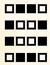
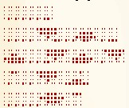

Выпуск №1 на 7 сезоне
Оглавление:
стр. 4 Разведение жаб в домашних условиях
стр. 14 Идеальные условия для содержания жабы
Как же получить жабу самым простым способом на пепеленде? Можно конечно купить её в тз за АБ, но она будет у вас только в мп1, да и АБ - не так уж мало.
Мы предлагаем вывести жабу в домашних условиях с минимальными вложениями. Поехали!
Чтобы вывести жабу в домашних условиях вам понадобится головастик. Вы можете купить головастика в ведре в торговой зоне, но если вдруг вам хватило алмазов на журнал, но не хватило на головастика, в конце статьи мы расскажем как получить головастика без вложений.
А теперь как же сделать из головастика полноценную ЖАБУ.
Для этого вам понадобится:
Головастик в ведре
Ведро с водой
16 любых блоков
Теперь выставьте блоки так как показано на схеме:
{kind=link}
Выставить блоки нужно в два слоя. В получившийся колодец на дно нужно вылить головастика и воду так, чтобы получился бесконечный источник.
Осталось только ждать, это может занять примерно 20 минут. Если покормить головастика слизью, он вырастет быстрее. Стоит помнить, что жаба может вырасти трёх цветов. Это зависит от биома:
Оранжевая жаба:
Тайга
Равнины
Лес
Тёмный лес
Обычное болото
Грибные поля
Выветренные холмы
Зелёная жаба:
Заснеженная тайга
Тундра
Замёрзший океан
Белая жаба:
Джунгли
Меса
Пустыня
Саванна
Тёплый океан
Мангровое болото
Все биомы незера
Так, теперь стоит рассказать как получить головастика без алмазов. Для этого вам потребуется:
Мангровое болото
Ведро
Теперь вы должны прийти на любое мангровое болото и найти икру жабы. Она выглядит вот так:
{kind=link}
Теперь вам нужно дождаться пока из икры вылезет головастик. Это может занять несколько десятков минут. Затем вы Просто должны поймать его в ведро.
Если вы не нашли икры, но нашли жаб, вы можете размножить их. для этого вам понадобится слизь. Жабы размножаются так же как другие животные, разве что откладывают икру, а не спавнят ребёнка.
Идеальные условия для содержания жабы
Если вы решились завести это милое создание, Pipo-Science настоятельно советует окружить её подходящими условиями. Вы можете окружить её условиями, подобными природным. На пример: Для белой жабы вы можете создать мини пустыню. ИЛи мини месу. Если же у вас мало места, вы можете просто сделать пол из песка и насыпать небольших пустынных гор. Вы можете посадить мёртвые кусты и нались подоём для плавания. Можете привести собратьев этой жабы, чтобы ей было не так скучно.
Что насчёт зелёных жаб? Они живут в холодных биомах, значит её нужно окружить холодом. Можете создать небольшой снежный биом, наставить снега и сделать ледяное озеро. Посадить еловые кустики или, если позволяет место, даже посадить целую ель.
Оранжевые жабы живут в умеренных биомах. Вы можете создать небольшое болото, создать несколько островков, а оставшееся пространство залить водой, посадить морской травы на дно и разбавить всё это грязью. Не забывайте про деревья, можете посадить мангровые, а можете и обычные дубы.
Литературный клуб имени Дарьи Донцовой.
Автор текстов: Whu00
Большая часть информации была взята с сайта minecraft.fandom.com
Литературный клуб находится в мп2 по координатам 20 ~ -662*
* Координаты с 7 Пепеленда.